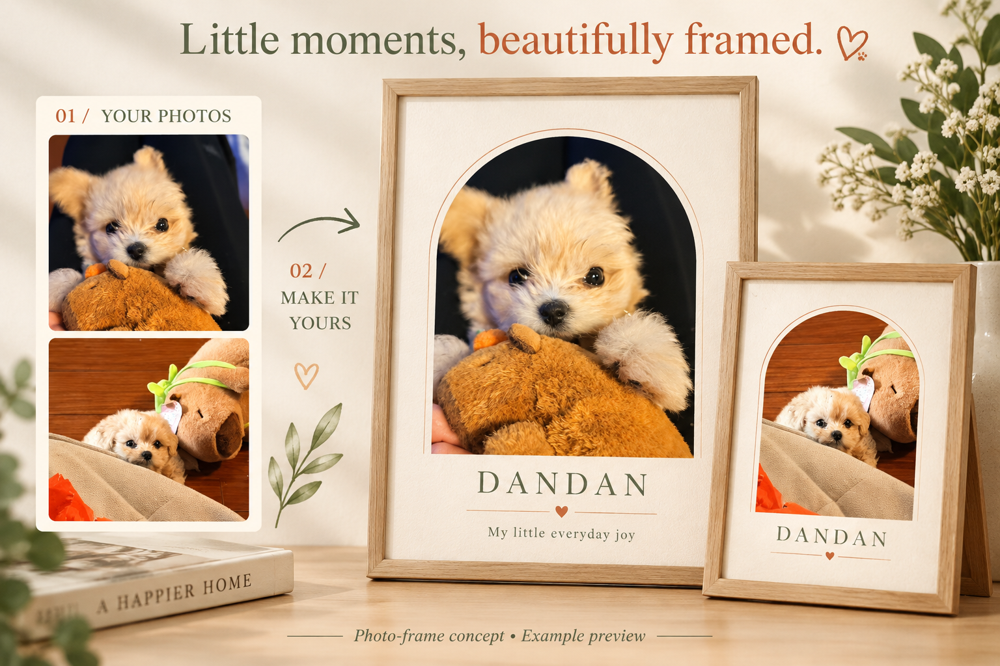
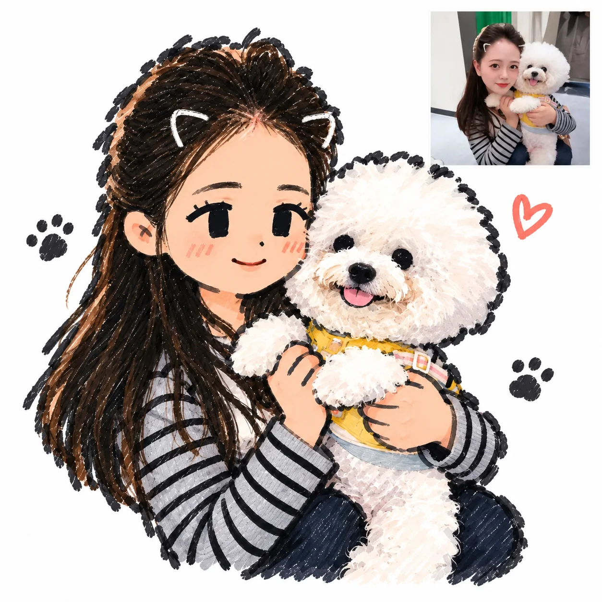
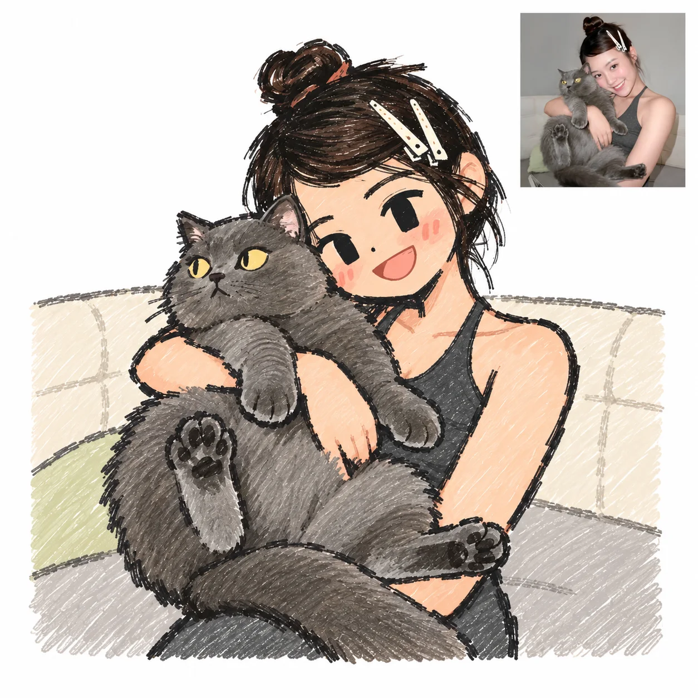
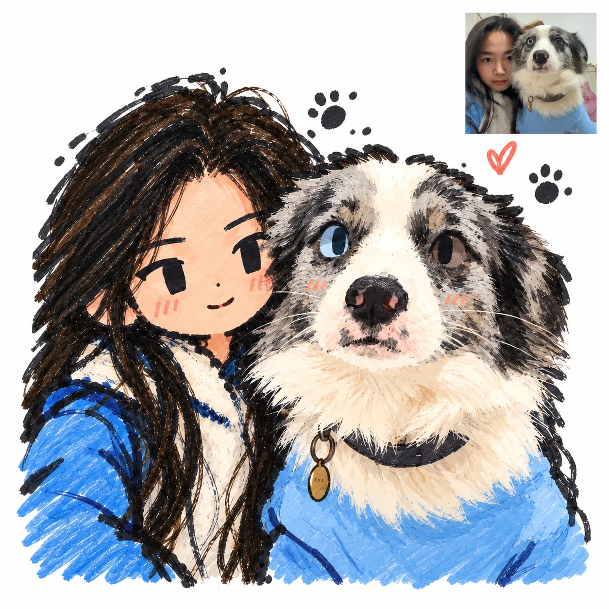
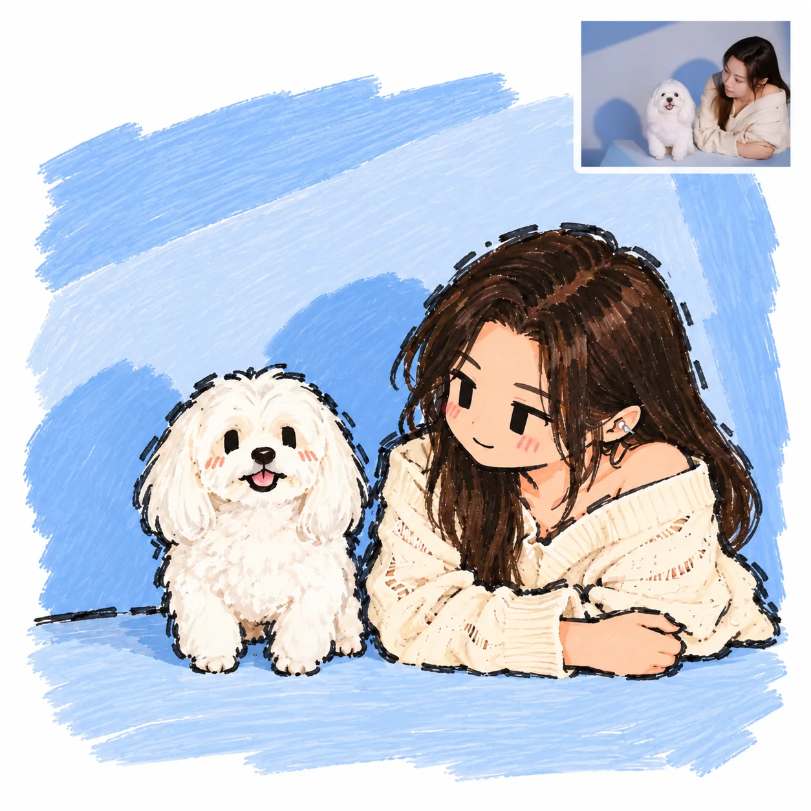
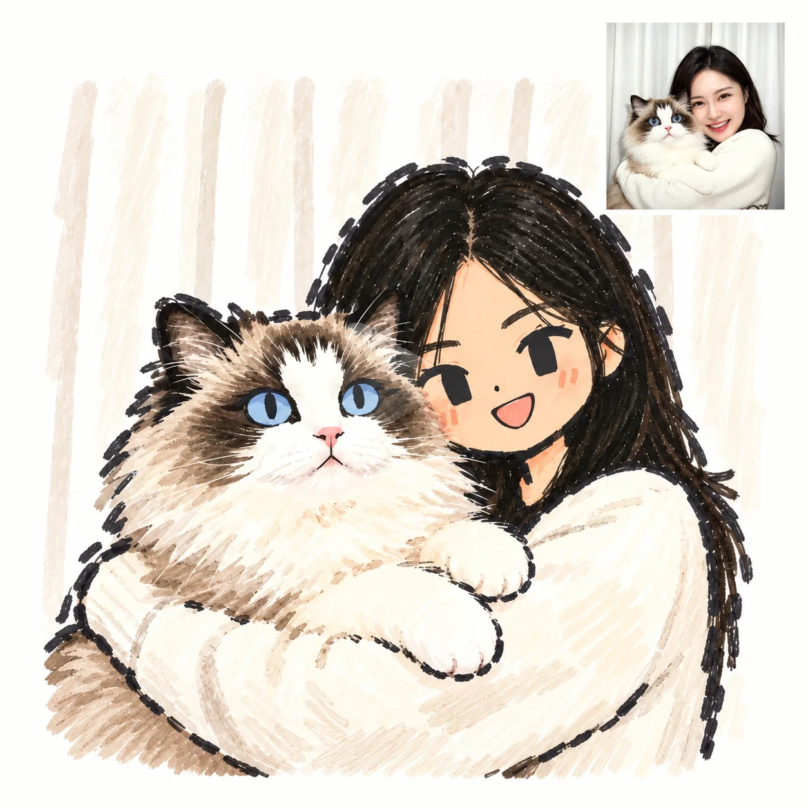
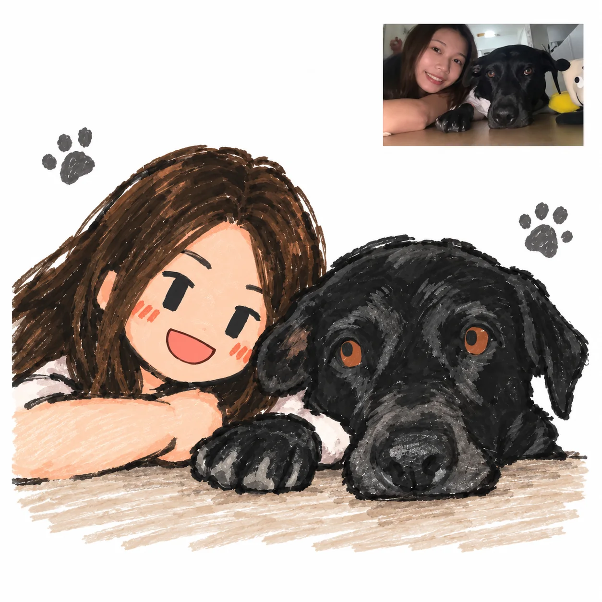
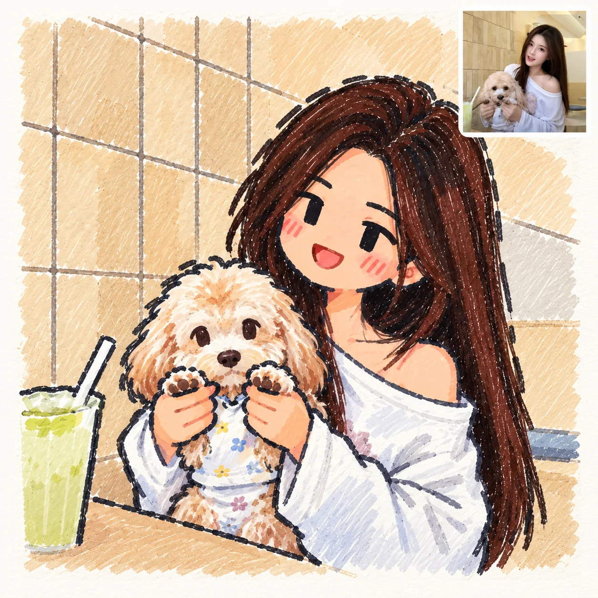
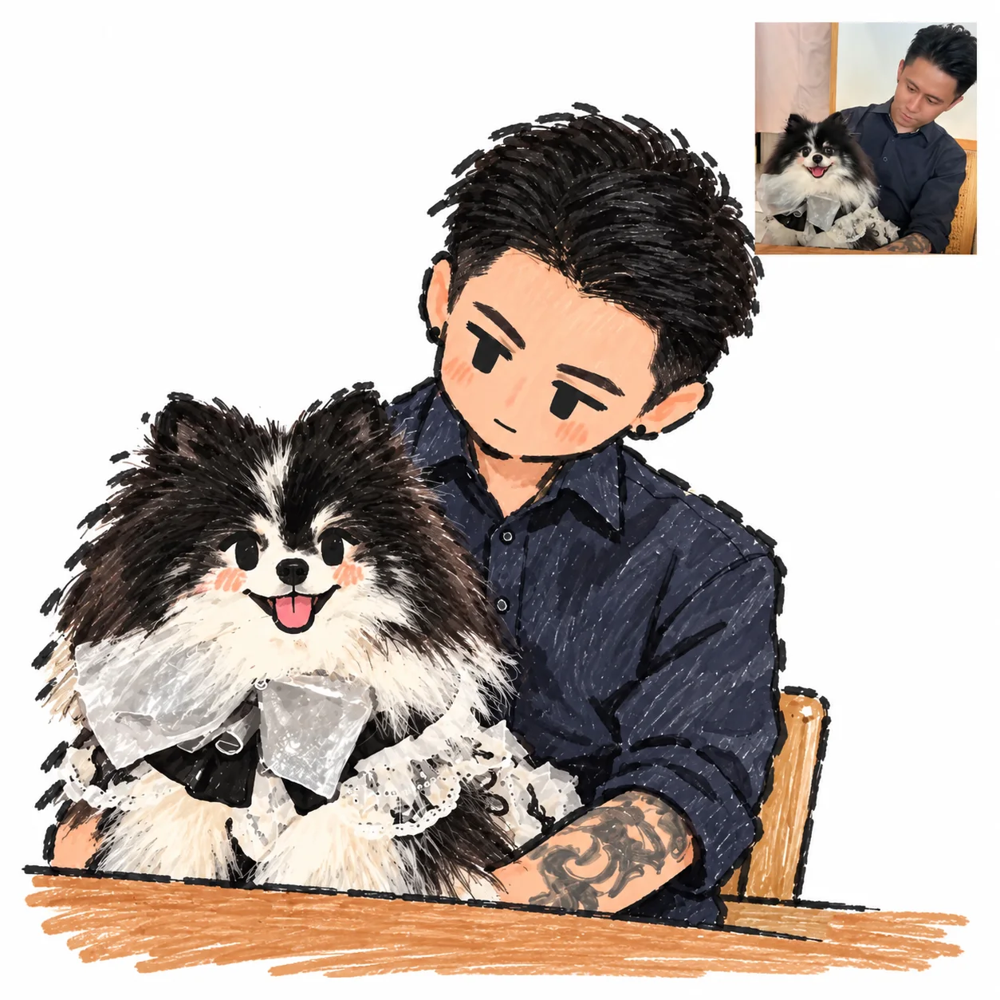
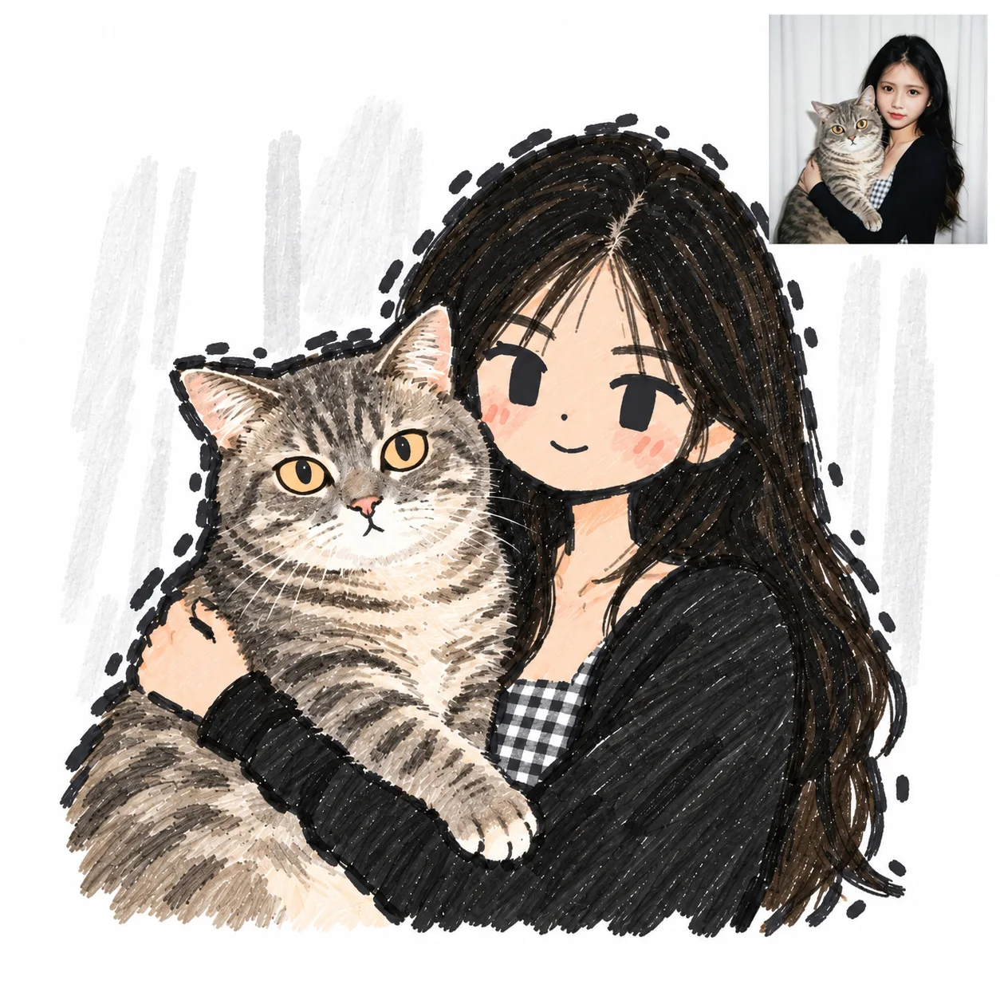

把喜欢的照片，排成喜欢的样子。
先用蛋蛋的示例照片试试，也可以上传自己的宠物照片。
纪念照实时预览5 × 7 in
外部相框仅供展示，下载文件只包含画面。
几个步骤，
一份特别的纪念。
看看如何更换照片、修改文字和切换排版，也可以直接在上方编辑器中尝试。
视频由原版编辑器实际操作截图制作，界面名称可能与当前版本不同。
生成静音 WebM 操作视频，无需摄像头或录屏权限。演示会下载一张示例 PNG，结束后恢复你的编辑设置。
下载原版操作演示 · MP4 ↓生成的视频会显示在这里。
在浏览器中生成的操作演示。陪伴，也可以是手绘的样子。
可爱油画棒风格参考 · 手绘大图与右上角照片对比，点击查看清晰图片。
以下为用户提供的参考案例，经 AI 清理截图界面与水印；修复区域可能有细节变化，并非本站生成接口的实测结果。当前相框工具暂无 AI 生成功能。









从手机相册，到生活的一角。
选一张照片
上传一张喜欢的照片，光线充足、清晰的照片更适合打印。
做一点调整
选择排版，添加宠物名字，调整照片的位置。
保存这份陪伴
下载 PNG，在家打印或交给打印店。